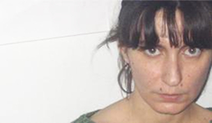

ПРИТЧА О ГРАНТОЕДСТВЕ
1988. Землетресение. В университете отменены уроки. Студенты, почти все, создают отряды и едут в зону бедствия разбирать руины. Некоторые из них не выдерживают, возвращаются раньше срока, там страшно, можно просто сойти с ума.
Студентки, если знают один из иностранных – записываются в переводчицы на волонтерских началах. В Ереване на каждом шагу – иностранцы, которых можно различить издалека по ярким курткам. Через некоторое время курток станет больше, а иностранцев меньше. Станет меньше также студенток, знающих иностранный, они выйдут замуж и уедут, в этой первой волне эмиграции будут и парни – любящие Сарояна и армянскую родину – штат Калифорния , а может просто влюбленные в джинсы и жвачку. Черно-белая жизнь, с сидящей гвоздем в мозгах мыслью об успешном сценарии угона самолета из СССР – закончена. Впереди – рай на земле...
Тем студенткам, кто не может или не рискует переводить, тоже есть чем заняться. Расфасовкой лекарств, например. К Европейцу, который прилетел вместе с ящиками, прикреплен отряд волонтеров, нужно открыть ящики, сгруппировать отдельно обезболивающие, жаропонижающие, кардио препараты и т.д. и обратно сложить все туда же – для отправки в зону бедствия. Много, сотни картонных ящиков, впечатление такое, что добрейшие потомственные аптекари из райских городков Европы, взяли по картонному ящику и наполнили их лекарствами со всех своих полок. В каждом из ящиков – разнообразие цвета и размера, яркая упаковка волшебных эликсиров просится на новогоднюю елку.
У Европейца пока нет переводчицы, будет когда закончится работа, для того, чтобы показать местные достопримечательности. Но университетские не лыком сшиты, базовый уровень иностранного - ведь сдавали на вступительных - есть почти у всех.
Для начала Европеец проводит ликбез, показывает символы-подсказки на упаковках. Все легко и просто: если подходить творчески к процессу, то повертев в руке упаковку, со стопроцентной точностью можно различить мочегонное от лекарства для печени. Работа не трудная, Золушек много и они могут разговаривать друг с другом, поэтому не устают.
Европеец объявляет обязательный десятиминутный “перекур” через каждый час работы. Трех минут хватает, чтобы узнать, что у него есть родители и сестра, и живет он в красивом городе. В глазах Европейца бесконечная жалость ко всем присутствующим. Ну и черт с ним. Больше говорить не о чем. Языковой барьер. Европеец, улыбаясь прислушивается к непонятной речи, но скоро устает, и мимически-жестовое общение постепенно угасает.
Студенткам тоже скоро надоедает болтовня. Работа идет быстрее в тишине. Берешь коробочку с лекарством и кладешь в нужное место, представляя человека среди руин, у которого раскалывается голова и ты помогаешь ему, у старушки сердечный приступ, ты помогаешь ей, у новорожденного понос – ты спасаешь его. Нет, ты не Золушка, а добрая фея.
Поднимаешь глаза – Европеец над головой, оказывается он уже давно рядом и внимательно наблюдает за процессом, как берешь, вертишь довольно долго в руках коробочки (ведь нужно время для того, чтобы представить ту бабушку, которую спасаешь) и кладешь уже после того, как сюжет исчерпан. Но у Европейца своя история. Он спрашивает: у тебя дома кто-то болен? Нет, отвечаешь. Но он уже “все понял” : Ты можешь отнести это домой. Это очень хорошее лекарство. Это дорогое лекарство. Смотришь на него тупыми глазами. Он говорит опять: ты можешь взять это домой, и думает о себе, как о добром волшебнике, который принес яркие чудесные коробки в серый мир и спасает мою бедную серую бабушку.
Европеец отходит. Я уже не фея. Начинаю думать, какое именно лекарство может пригодится нам дома? Да в принципе любое пригодится... Но соседка мучается почками, а что если для нее взять? Нет, стоп, я конечно ничего не возьму... Просто думаю. Беру лекарство и думаю, для кого из знакомых оно бы пригодилось ... И еще одна мысль в самом темном уголке – ведь можно взять и продать...
Работаем уже третий день. Разбираем последние коробки. На последнем из перекуров Европеец показывает волшебство высшего класса. Он произносит целую речь, из которой следует, что мы хорошо работали, мы достойны награды, здесь есть чудесные дорогие лекарства, они произведены для европейцев, мы можем (должны) взять все, что хотим и сколько хотим, в нашей стране трудное время, он все понимает... Берите, говорит он и тактично выходит из комнаты...
После ухода волонтеров-студенток лекарств стало меньше. Европеец мог не считать. Он уже понял - контакт есть. Нашел общий язык с серыми людьми. Теперь можно погулять по городу, закрепить в памяти детали, которые нужны для того, чтобы в уютном красивом городке, сидя у камина, чувствовать себя добрым волшебником-экстремалом.
Это было начало.
Луиза Погосян
14-05-07
Студентки, если знают один из иностранных – записываются в переводчицы на волонтерских началах. В Ереване на каждом шагу – иностранцы, которых можно различить издалека по ярким курткам. Через некоторое время курток станет больше, а иностранцев меньше. Станет меньше также студенток, знающих иностранный, они выйдут замуж и уедут, в этой первой волне эмиграции будут и парни – любящие Сарояна и армянскую родину – штат Калифорния , а может просто влюбленные в джинсы и жвачку. Черно-белая жизнь, с сидящей гвоздем в мозгах мыслью об успешном сценарии угона самолета из СССР – закончена. Впереди – рай на земле...
Тем студенткам, кто не может или не рискует переводить, тоже есть чем заняться. Расфасовкой лекарств, например. К Европейцу, который прилетел вместе с ящиками, прикреплен отряд волонтеров, нужно открыть ящики, сгруппировать отдельно обезболивающие, жаропонижающие, кардио препараты и т.д. и обратно сложить все туда же – для отправки в зону бедствия. Много, сотни картонных ящиков, впечатление такое, что добрейшие потомственные аптекари из райских городков Европы, взяли по картонному ящику и наполнили их лекарствами со всех своих полок. В каждом из ящиков – разнообразие цвета и размера, яркая упаковка волшебных эликсиров просится на новогоднюю елку.
У Европейца пока нет переводчицы, будет когда закончится работа, для того, чтобы показать местные достопримечательности. Но университетские не лыком сшиты, базовый уровень иностранного - ведь сдавали на вступительных - есть почти у всех.
Для начала Европеец проводит ликбез, показывает символы-подсказки на упаковках. Все легко и просто: если подходить творчески к процессу, то повертев в руке упаковку, со стопроцентной точностью можно различить мочегонное от лекарства для печени. Работа не трудная, Золушек много и они могут разговаривать друг с другом, поэтому не устают.
Европеец объявляет обязательный десятиминутный “перекур” через каждый час работы. Трех минут хватает, чтобы узнать, что у него есть родители и сестра, и живет он в красивом городе. В глазах Европейца бесконечная жалость ко всем присутствующим. Ну и черт с ним. Больше говорить не о чем. Языковой барьер. Европеец, улыбаясь прислушивается к непонятной речи, но скоро устает, и мимически-жестовое общение постепенно угасает.
Студенткам тоже скоро надоедает болтовня. Работа идет быстрее в тишине. Берешь коробочку с лекарством и кладешь в нужное место, представляя человека среди руин, у которого раскалывается голова и ты помогаешь ему, у старушки сердечный приступ, ты помогаешь ей, у новорожденного понос – ты спасаешь его. Нет, ты не Золушка, а добрая фея.
Поднимаешь глаза – Европеец над головой, оказывается он уже давно рядом и внимательно наблюдает за процессом, как берешь, вертишь довольно долго в руках коробочки (ведь нужно время для того, чтобы представить ту бабушку, которую спасаешь) и кладешь уже после того, как сюжет исчерпан. Но у Европейца своя история. Он спрашивает: у тебя дома кто-то болен? Нет, отвечаешь. Но он уже “все понял” : Ты можешь отнести это домой. Это очень хорошее лекарство. Это дорогое лекарство. Смотришь на него тупыми глазами. Он говорит опять: ты можешь взять это домой, и думает о себе, как о добром волшебнике, который принес яркие чудесные коробки в серый мир и спасает мою бедную серую бабушку.
Европеец отходит. Я уже не фея. Начинаю думать, какое именно лекарство может пригодится нам дома? Да в принципе любое пригодится... Но соседка мучается почками, а что если для нее взять? Нет, стоп, я конечно ничего не возьму... Просто думаю. Беру лекарство и думаю, для кого из знакомых оно бы пригодилось ... И еще одна мысль в самом темном уголке – ведь можно взять и продать...
Работаем уже третий день. Разбираем последние коробки. На последнем из перекуров Европеец показывает волшебство высшего класса. Он произносит целую речь, из которой следует, что мы хорошо работали, мы достойны награды, здесь есть чудесные дорогие лекарства, они произведены для европейцев, мы можем (должны) взять все, что хотим и сколько хотим, в нашей стране трудное время, он все понимает... Берите, говорит он и тактично выходит из комнаты...
После ухода волонтеров-студенток лекарств стало меньше. Европеец мог не считать. Он уже понял - контакт есть. Нашел общий язык с серыми людьми. Теперь можно погулять по городу, закрепить в памяти детали, которые нужны для того, чтобы в уютном красивом городке, сидя у камина, чувствовать себя добрым волшебником-экстремалом.
Это было начало.
Луиза Погосян
14-05-07
Кавказский Центр Миротворческих Инициатив
© Ассоциация Текали - info@southcaucasus.com